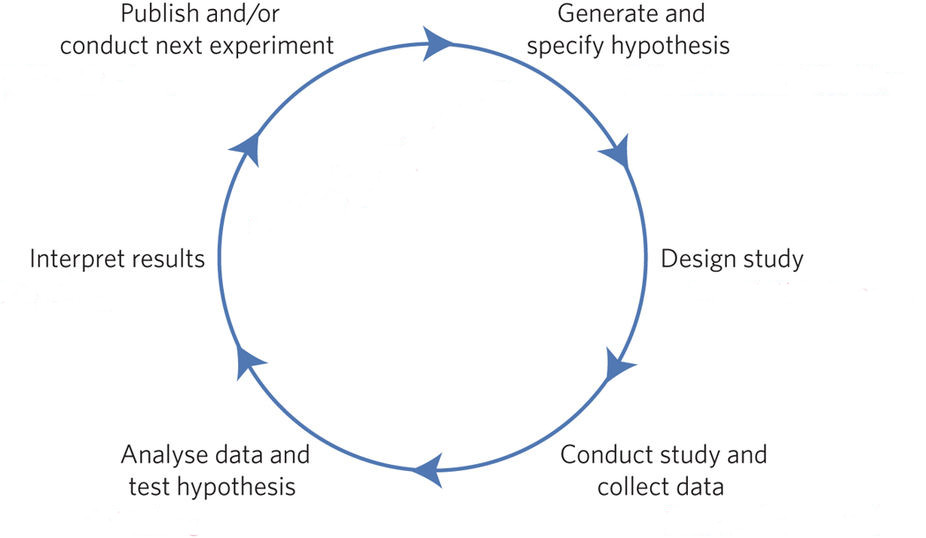

An introduction to digital open
research in clinical psychology
Matthias Weiler
29.02.2019
Who am I?
My name is Matthias Weiler
I am a psychologist
I am a psychotherapist
I work as a research assistant
at Freie Universität Berlin
I am a nerd
I like free software
I like open science
And who are you?
Please raise your hand …
… if you study psychology
… if you want to become a psychotherapist
… if you want to become a scientist
… if you have participated in
a (small) research project
… if you know what open science is
… if you are (a little) anxious
to speak English in class
What are we going to do here?
In the course of this semester you will…
… learn what open science is
… get to know tools that help
you with your research
… plan and conduct a small research project
… present your results to others
Any questions so far?
Today:
Why would I care for open science?
Science - how does it work?
The hypothetico-deductive model (Munafo et al. 2017)

Source (edited): https://media.nature.com/lw926/nature-assets/nathumbehav/2017/s41562-016-0021/images_hires/s41562-016-0021-f1.jpg
What could possibly go wrong?
Quiz
Which of the following articles
was actually published?
A) Chocolate causes weight loss
or
B) Chocolate does not help you lose weight
And the winner is …
Question
Why did it get published anyway?
Answer
Because positive and novel studies are
more likely to be published whereas
negative studies and replications usually
remain inside the scientists’ drawers
This is known as publication bias
There is no cost to getting things wrong
The cost is not getting them published
Prof. Brian Nosek
Feeling the future
Please raise your hand…
… if you believe that your
current thoughts and feelings
are influenced by future events
Feeling the future: Experimental evidence
for anomalous retroactive influences on
cognition and affect (Bem, 2011)
Precognition conflicts with what we
know to be true about the world
Still, researchers failing to reproduce Bem’s
findings had substantial problems getting
their negative results published
Rather ironically, some of Bem’s findings
are the result of HARKing, which stands for
“Hypothesizing After the Results are Known”
Exercises
Please pair up with the
person sitting next to you
Exercise 1
Person 1: Please think of a
number between 1 and 100
Person 2: Guess person 1’s number
Person 1: Please tell person 2
the number you thought of
Who of you made the right guess?
Exercise 2
Person 1: Please think of a
number between 1 and 100
Person 1: Please tell person 2
the number you thought of
Person 2: Guess person 1’s number
Who of you made the right guess?
This is how HARKing works
Except, instead of guessing a number you
would try to answer a research question
The pizza papers
Scientists have a need for significance

“P-Values” by xkcd.com is licensed under CC BY-NC 2.5

{kind=link}
{kind=link}
{kind=link}
The process described here is known
as p-hacking or data dredging which
is the art of getting significant results
Visit p-hacker and train your
p-hacking skills today!
Power up
What if there is an effect
and you just can’t find it?
Power posing
Source: Erik (HASH) Hersman from Orlando [CC BY 2.0], via Wikimedia Commons
.jpg){kind=link}
Statistical power in a nutshell
- \(\alpha\): The conditional probability of incorrectly
rejecting H0 when it actually is true. - \(\beta\): The conditional probability of failing
to reject H0 when it is false. - Power: The complement of β (i.e. 1 - β), this is the
probability of correctly rejecting H0 when it is false.
Better science with quality control
- “Bad things happen when we don’t
think seriously about measurement” - Sloppy measurement often leads
to “noisy data” - Noisy data leads to low statistical power
Summary
The hypothetico-deductive model (Munafo et al. 2017)
Source (edited): https://media.nature.com/lw926/nature-assets/nathumbehav/2017/s41562-016-0021/images_hires/s41562-016-0021-f1.jpg
The hypothetico-deductive model (Munafo et al. 2017)

Source (edited): https://media.nature.com/lw926/nature-assets/nathumbehav/2017/s41562-016-0021/images_hires/s41562-016-0021-f1.jpg
Interview with researcher
Any more questions?
Next session preview
Open science to the rescue